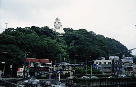
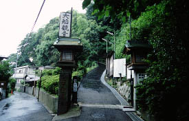
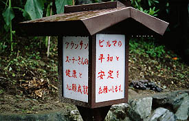
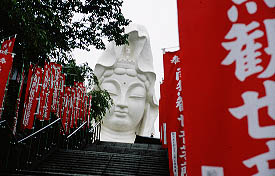
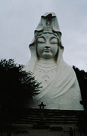
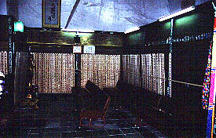
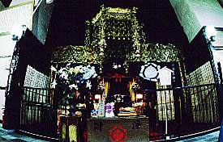
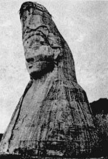
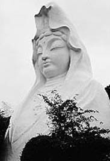

大船観音・・・JR大船駅前の高台で西の方を向いているその姿はまるで東海道線に乗って東京にやってくる人々を見ているかのようだ。東海道線を御利用の方はよ〜くご存じと思うが、日本で最も交通アクセスの良い駅前大観音といえよう。 また、夜はライトアップされており、どんなに酔っぱらっていても大船駅だけは間違えない、という究極のランドマークと化している、もしかしたら日本で一、二を争う有名な大観音かも知れない。  遠くから見ると立像なのかな、とも思えるが、高台の上に建っているからそう見えるのであって立像では無い。そして座像ですらない。胸像なのだ。 中には地中に下半身が埋まっていると堅く信じている人もいるようなので、そういう人を見かけたら、どうぞ皆さん温かい目でそっと見守ってあげて下さいね。 この大きさで胸像スタイルというのは大変珍しい。何故胸像なのか後に知る事になる・・・ 大船観音を目指そう。駅の前にはすぐ川があり、そこを渡った通りの一本裏に大船観音の入口がある。  入口には大船観音の胎内改修工事のための寄付の呼び掛けと寄付した人の札が掲げられていた。ほとんどが県内の人だが、中には遠方の人もいる。そしてどこの国か判らないが外国の人の名前まである。 参道を登っていくと山門が現れ、ここで拝観料を払い、境内に入る。中に入って最初に目に付くのはズラッと並んだ灯籠だ。この灯籠、もちろん奉納されたものだが、そこに書かれている方納者名が気になる。 英字表記ながらSHWEとかAYEとか不思議な名前だ。でも、何処かで聞いたことのあるような・・・ おおおッ！そうか！ミャンマーの人の名前だ！ そういえば入口に張ってあった寄付者の名前もミャンマーの人の名前じゃないか。恐らく在日のミャンマーの人が奉納したのであろう。でも、ミャンマーには観音信仰ってないんだよね、大きい仏像が大好きだから別にいいのかな。思わぬところでミャンマースポットを発見してとても意外で、得した気分だ。  そして階段を登っていくといよいよ大船観音のお出ましである。   玉砂利が敷かれた庭園の中にデーンとおわす大船観音。高さは25.39メートル。 以前、見た時よりキレイに見える、と思ったら平成10年に外壁の化粧直しをしたそうだ。 顔はふっくらとした感じで目が大きい。ま、悪くないんじゃないですか。  で、背後から内部の部屋に入る。
だ〜れもいない空間はシーンとしている。 壁面には卒塔婆が並べられ、コンクリートの内壁や梁が露出している。コンクリートの量感に押しつぶされそうに重い感じなのはこの日が雨だった所為だけではあるまい。 こりゃあ胎内改修工事もしたいわな。 正面の祭壇には大船観音の1/20スケールの観音像が祀られている。  上を見上げると柱と梁に沿ってメンテ用のキャットウォークと鉄梯子が。 ソファーに腰掛ける。このようにソファーがあると言う事は、ここで法要のような事をするのだろうか？ まるで時が停まったかのような静かな空間だ。しかしその静けさは決して軽やかなものでは無く重く息苦しい静けさであるように思えた。 暫く胎内にいると時々参拝客が訪れる。雨だというのにさすが有名大観音である。傍らの参拝ノートを見るとたくさんの書き込みがある。ほとんどは他愛のないものだが、中には感動で涙が止まらなかった人や観音様を絶賛する文章にもであった。 そもそも大観音というものは私にとってはシャレのようなものなのだが、ここはどうも勝手が違う。それは、この胎内の雰囲気があまりにも真剣だからだろう。 胎内から出て観音像の正面に戻り、説明書きを読む。すると・・・ えっ！ 大船観音って戦前につくられたの！？ この大船観音、完成は昭和35（1960）年。これだけでも日本の大観音史に於いて老舗といえるが、何と昭和9年の時点で輪郭が出来上がっていたというのだ。 じゃあ、二十数年かけて作られたのかと言えば、そうではなく、工事が中断されていたというのだ。 いったいこの大船観音に何があったのだろうか？そして戦時中、観音像はどの程度まで出来上がっていたのだろうか？ 気になったのでちょっと調べてみた。
・・・この大船観音の建設が開始されたのが昭和4年。浜地天松、花田半助という人物を中心にして建設計画がすすめられた。 当時の建設主旨書がある。「大観音建立して我等の日本を守れ！」という汗がほとばしって来そうな凄いタイトルのその宣言文には日本の世相を糺すため巨大な観音像を建設する由が綴られている。 しかし、資金難のため昭和9年に工事は中断、そのまま戦争に突入し、護国観音と呼ばれた観音像は工事途中のまま放置されてしまう。 ちなみに最初は立像の予定だったが、現場の地質が弱いために座像に変更。 さらに胸像スタイルに変更になったそうな。 そして戦後。 途中までつくられた護国観音は今度は大船観音と名を変えて工事が再スタートされる事になる。 造りかけのまま廃墟になっていた観音像に肉付けをして現在の姿に造り上げた。 そこには戦前、中心になっていた浜地、花田の姿は無い。 変わって東急グループの五島慶太や当時の衆議院議院、安藤正純、牧野良三といった人々が発起人に名を連ねる。 その趣意書には戦後の世相を反映して戦没者慰霊と世界平和が謳われている。 戦前、「世相浄化」の名の許に建設された大観音はこうして生れ変わったのである・・・
大船観音の辿って来た歴史はそのまま日本の大仏、大観音の歴史の雛形といえまいか。現在、全国に林立する大仏、大観音だが、その創成期には火傷しそうな位の熱い想いが渦巻いていたのだ。 大船観音の胎内空間の重苦しさはその熱気の残照なのかも知れない。   写真左が戦時中の姿、右は現在の大船観音 それにしても20数年間も放置された作りかけの大観音。大船の人達はどんな思いだったのだろう。
2001.6.
珍寺大道場 HOME